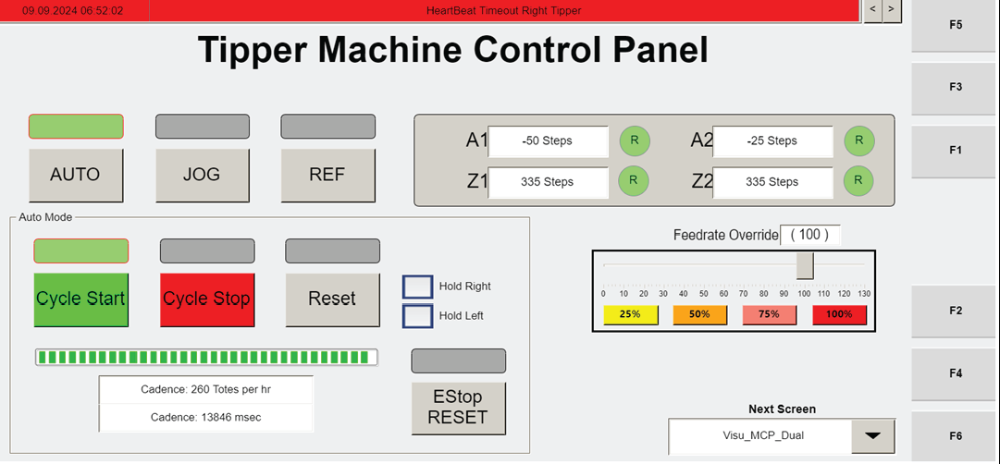

| Procedure ID | proc_perform_operator_station_loto_visu_dual_mcp_electrical_panel_power_switch_v1 |
|---|---|
| Title | Perform Operator Station Lockout/Tagout Using Visu_Dual_MCP and Electrical Panel Power Switch |
| Procedure Type | recovery |
| Primary Role | operator |
| Support Safe | Yes |
| Capability Tags | e_stop_or_safety_stop |
| Access Surface | tipper_hmi, physical_floor |
| Audience Roles | operator |
| Failure Pattern Tags | None |
| Validation Status | needs_sme_review |
| Merge Status | source_finalized |
Safely stop the operator station for lockout/tagout by using the operator station HMI to navigate to the Visu_Dual_MCP screen, press CYCLE STOP, optionally jog the tipper carriages using the JOG controls (+/–) for the correct tipper axis, then turn OFF the operator station electrical panel power switch and apply LOTO.
Use when you need to place the operator station into a stopped state and then perform lockout/tagout at the operator station electrical panel.



Responsible role: operator
Instruction:
At the operator station HMI, navigate to the "Visu_Dual_MCP" screen.
Expected result:
The "Visu_Dual_MCP" screen is displayed on the operator station HMI.
Stop or Escalate If:
Responsible role: operator
Instruction:
On the "Visu_Dual_MCP" screen, press "CYCLE STOP".
Expected result:
The operator station is in a stopped state after pressing CYCLE STOP.
Stop or Escalate If:
Responsible role: operator
Instruction:
If you need to move the carriages to a different position: press "JOG", select the corresponding axis for the tipper, then use the "+" and "-" buttons to move the carriages.
Expected result:
The carriages move to the desired position using the selected tipper axis controls after pressing JOG.
Responsible role: operator
Instruction:
At the operator station electrical panel, turn the power switch to "OFF" and apply LOTO.
Expected result:
The operator station electrical panel power switch is set to "OFF" and LOTO is applied.
Stop or Escalate If: